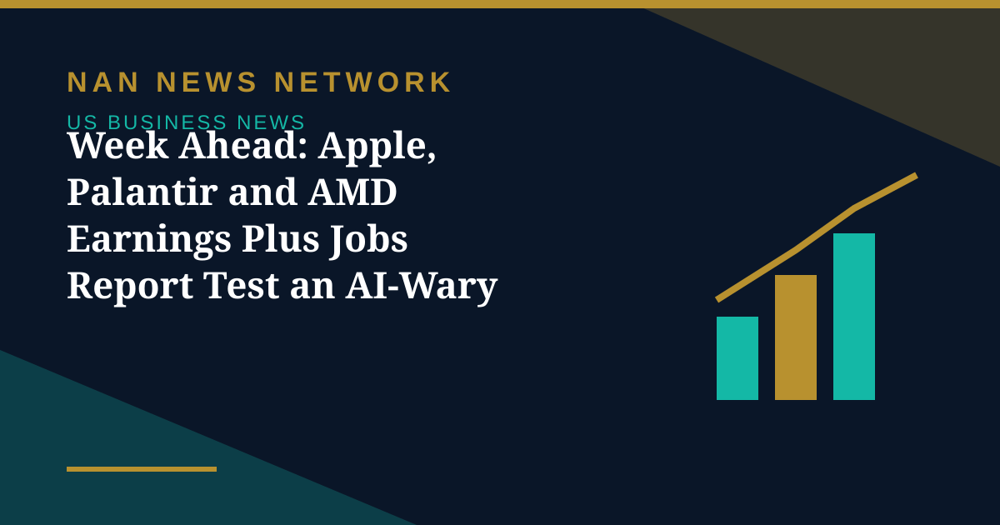

Week Ahead: Apple, Palantir and AMD Earnings Plus Jobs Report Test an AI-Wary Market

US markets head into another busy week, with corporate earnings, key economic data and the midterm elections all set to test investors after a bruising October, Reuters reported on October 31.
The earnings calendar
Apple and Palantir are set to report on Monday after the closing bell, followed by Advanced Micro Devices and Super Micro Computer on Tuesday. Apple is expected to report earnings per share of $1.98 on revenue of $113.27 billion, Palantir $0.41 per share on $2.18 billion, and AMD $1.94 per share on $13.1 billion in revenue. Investors will watch not just the headline numbers but what the companies say about demand and the outlook for AI-related spending, after disappointing results from Alphabet, Amazon and Intel drove the Nasdaq to its worst month since March 2025.
Jobs data and the election
The week ends with the October jobs report from the Bureau of Labor Statistics on Friday, giving investors a fresh read on the labor market after a relatively weak September reading; economists expect roughly 55,000 jobs added, according to a Dow Jones estimate cited by MarketWatch. In between, voters decide the midterm elections on Tuesday, November 3, an outcome that could shape the outlook for AI regulation. With over half of the S&P 500 having reported third-quarter results, overall earnings are on pace to rise 31.6% for the period, according to LSEG data — a reminder that the selloff is about spending and returns, not a collapse in profits.
Sources: Reuters via Economic Times, TradingView/Stocktwits, November 1, 2026
More on US Business News
- S&P Downgrades Meta's Credit Outlook to Negative After $95 Billion AI Debt Plan
- October Ends in the Red for Tech: Nasdaq Down 5.3% for the Month as Investors Rotate to Defensives
- Exxon and Chevron Beat Profit Forecasts as a $6.3 Billion Binance Hack Hits Crypto Stocks
- Stocks Fall Thursday as Alphabet's Worst Day Ever Drags the Nasdaq Down 1.4%
- US Labor Costs Rose 0.8% in Q3 as Wage Growth Slowed, Easing — but Not Erasing — Inflation Fears
- Fed Holds Rates at 3.75%–4% in 10–2 Vote as Warsh Says Politics Played No Role
- US Economy Grew 3.4% in Q3, Fastest in a Year, Beating Forecasts
- Wall Street Rallies for Second Day as AI Stocks Lead Ahead of Fed Decision
- Fed Decision Day: Markets Price a Hold as Warsh Faces First Big Test
- Anthropic IPO Filing Lifts Stocks as Wall Street Rallies
- Broadcom's $63 Billion Financing Powers Anthropic Technology Deal
- Wall Street Heads Into Fed Week as Oil Near $117 and Stocks Slip
- Trend Hedge Funds Suffer Worst Week Since 2024 as AI Stocks Slide, Goldman Says
- Meta Lifts 2026 AI Spending Toward $145 Billion and Adds a Nonvoting Stock Class
- OpenAI Nears a $30 Billion Round at a $1.25 Trillion Valuation, Reports Say
- Rivian Buys UK Startup Third Dimension to Build Its Robotaxi Simulator